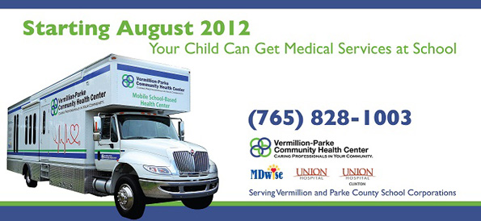

Mobile School-Based Health Center
In July 2011, the Department of Health and Human Services announced that the Valley Professionals Community Health Center (VPCHC) was awarded a School-Based Capital Program grant. This grant is made possible by the Affordable Care Act, which helps clinics expand and provide more health care services at schools nationwide.
The purpose and goal of VPCHC’s School-Based Capital grant project is to create a collaborative partnership between VPCHC and the five school corporations located in Parke and Vermillion counties, to help children stay in school by identifying and addressing health problems that may interfere in the learning process. The MSBHC will deliver a combination of primary health and a variety of other health-related services to the children attending these schools.
Other primary goals of the MSBHC include:
- Improve access to comprehensive, quality health care services by providing a convenient resource for students to gain access to the health care system, as well as a source for ongoing care for school-age children.
- Reduce the percentage of school-age children who are unable to obtain or delayed in obtaining necessary medical care.
- Implement evidence-based clinical services through the highly-trained staff of VPCHC, along with other community partners.
- Provide training opportunities for students enrolled in courses geared toward the delivery of health and human services, and to create a qualified local healthcare workforce.
This one-time grant will purchase and fully equip a mobile-based health center that will aid in the delivery of essential services to children attending any school within the five Parke and Vermillion County school corporations.
The Valley Professionals Community Health Center is collaborating with Union Hospital’s Richard G. Lugar Center for Rural Health to implement the project.
Contact the Mobile School-Based Health Center:
Phone (765) 592-6164
Email mobile@vpchc.org
2015 Mobile School-Based Health Center calendar
MSBHC Calendar for Jan - May 2015
